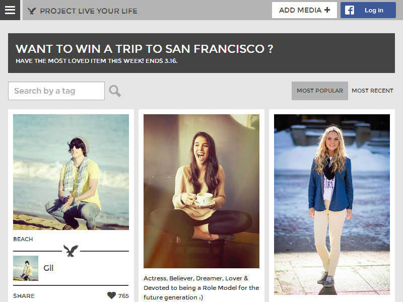
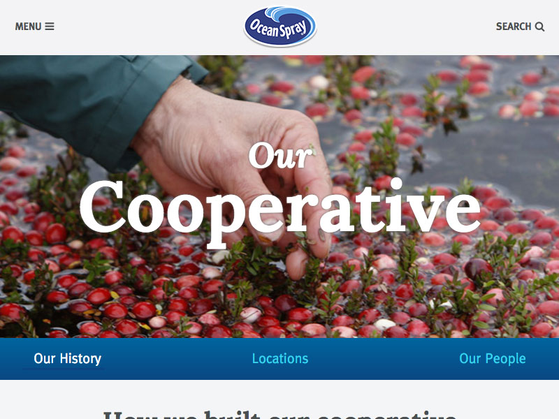
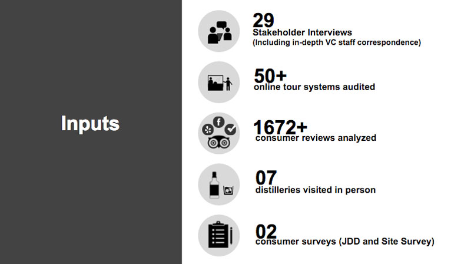

Hi, I'm Andrew Dobbs.
I design user-centered digital products.
My skills span the full stack of UI/UX–interaction design, prototyping, user research, information architecture, usability testing, and visual design.
A few bits of work are below. Here's my resume.
Thanks!
Fashion Contest Platform

I worked with engineers, visual designers, and product managers to create an extensible contest platform for American Eagle. User activity crushed the previous year's contest in just two days (over 11,000 profiles created and nearly 80,000 votes submitted).
SaaS Subscription and Onboarding
I redesigned the subscription page for Buildium as part of a larger onboarding project. The second iteration increased the percentage of users who sign up for yearly plans instead of monthly plans from ~12% to ~31%. The third iteration is actively in development.
Consumer and Corporate Websites

After completing a responsive redesign of Ocean Spray's consumer site, they asked our team to create their corporate site. I played a key role on both projects–conducting usability testing, facilitating client workshops, and designing the user experience.
Customer Experience Research

The highlight of my work with Jack Daniel's was a research project that investigated their distillery tour experience. We conducted extensive interviews, competitive analysis, and ethnographic field research, mapping out the opportunities to enhance the tour experience for visitors and staff.
Want Case Studies?
Please get in touch on LinkedIn or check out my resume for contact info.